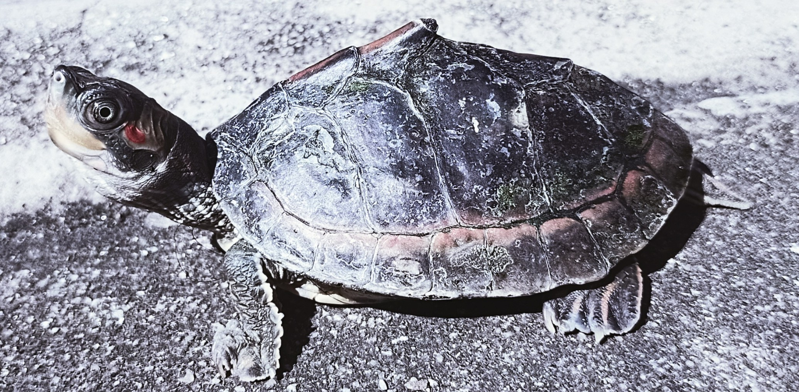
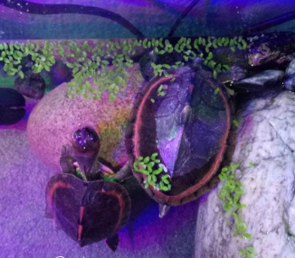

Some info about Fish
Fish are aquatic vertebrates that belong to the class Osteichthyes. They are cold-blooded and have fins and gills for swimming and breathing in water. There are over 33,000 species of fish that can be found in oceans, rivers, and lakes all over the world. Fish play an important role in the ecosystem and provide a source of food for many species.
 Aquatic Tortoise (Turtuey) is now one and half year old and he is very shy. He does not like to be touched or teased.